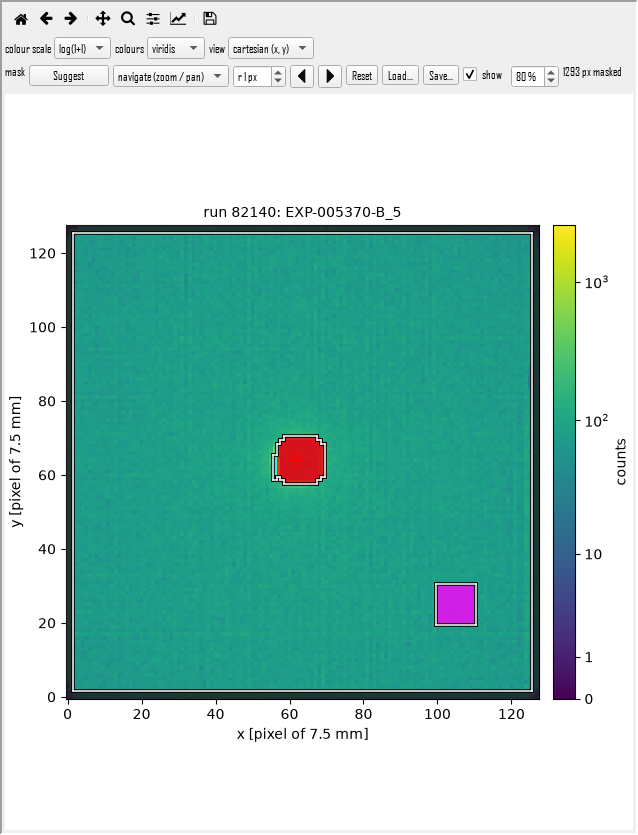
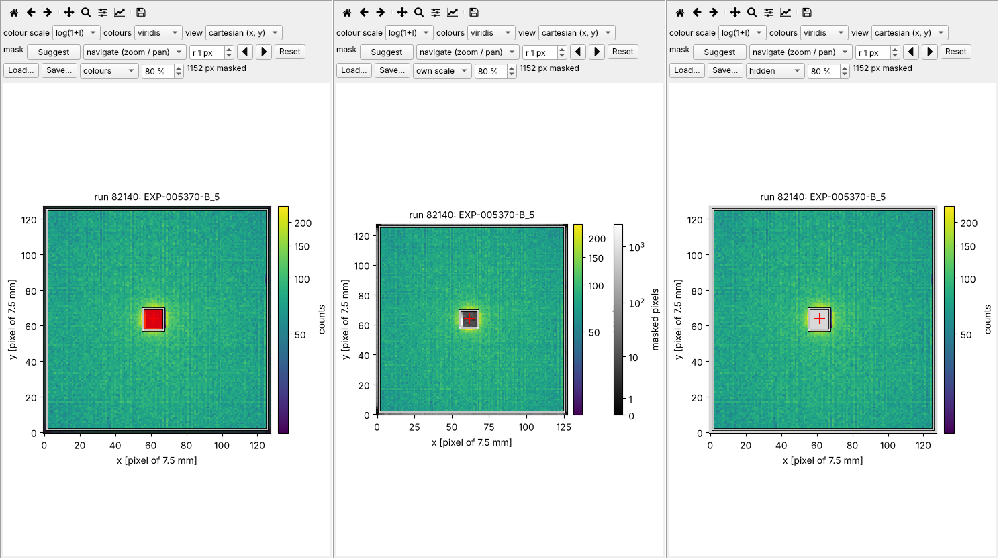

Masks
A mask excludes pixels from the average. pySASred keeps it as an integer image of the detector shape: 0 means the pixel is used, any set bit excludes it and says why.
bit |
reason |
colour |
origin |
|---|---|---|---|
1 |
border |
near-black |
the standard mask: the outer rows and columns (2 by default) |
2 |
beamstop |
red |
the first guess (a square around the beam centre), the rectangle around the shadow found by Suggest, or your adjustment of it |
4 |
user |
magenta |
drawn or loaded |
8 |
dead time |
white |
pixels whose dead-time factor exceeds the flag limit (set by the reduction) |
16 |
hot |
cyan |
isolated pixels far above their neighbourhood, found by Suggest |
32 |
efficiency |
orange |
no detector-efficiency estimate for the pixel (its whole row or column was masked in the water run; set by the reduction) |
A new detector image starts with the standard mask and a first guess of the beamstop: a square of half width 6 pixels around the beam centre (the SANS-I beamstops are square; shape and size under beamstop on the Reduction panel). It is only a start and is meant to be adjusted with the mask tools or replaced by Suggest. As long as the mask is untouched, the guess follows the beam centre and the size; Into mask puts the current guess into an edited mask (replacing its beamstop pixels). The mask is used at once by the live I(q), by Reduce selected and by the polar view, and it is kept with the last session.

Run 82140 after Suggest and one drawn rectangle: border (near-black frame), beamstop shadow (red), the pixels leaking at its left edge (cyan, under the outline) and the rectangle (magenta).
One mask per instrument configuration
Every instrument configuration has its own mask: collimation coll and detector distance SD (0.1 m), wavelength
(0.1 Å), beam stop type (SANS/beam_stop/out_flag, BerSANS “Beamstop”) and beam stop position x, y (1 mm)
(pysasfit.sasred.catalogue.mask_key()). Selecting a run of another configuration switches the mask in the
editor; the edited mask of the previous configuration is kept. The line below the mask tools names the
configuration of the mask shown and how many configurations have edited masks.
Reductions take the mask of the configuration of their (first) run: the one in the editor, a stored one, or,
if none was edited for that configuration, the suggested mask of the run; the notes say which. File → Save
masks of all configurations… / Load masks of configurations… write and read all of them in one HDF5 file
(one group per configuration with pixel_mask, the key and a label); the last session keeps them too.
Transmission region
A semi-transparent beam stop lets part of the direct beam through. The mask tools have a second layer for it: edit: transmission region (use). Its pixels are the opposite of masked pixels: they define where the transmitted beam is counted and leave the scattering untouched (a pixel can be masked for the scattering and belong to the region at the same time, which is the usual case behind the beam stop). The region is drawn in translucent green with a green outline above the mask.
control (region layer) |
action |
|---|---|
+ / − tools |
add pixels to the region / take them out |
Suggest |
an ellipse around the beam centre: 3 σ of the direct-beam profile of the configuration (at least 1.5 px), or the brush radius + 2 px without a profile |
Reset |
clears the region (the mask is kept) |
undo / redo |
as for the mask (one history for both layers) |
Like the mask, the region belongs to an instrument configuration (including the beam stop and its position):
configurations without a semi-transparent beam stop simply have none. Save masks of all configurations… writes
it as transmission_region next to pixel_mask, and the session keeps it.
Checking it. Reduction → Transmission through the semi-transparent beam stop… lists for every row of the reduction table shown:
I_bs: the counts of its scattering runs in the region, corrected for dead time and attenuator, per monitor (or per second, as the normalisation of the Reduction panel), runs summed;
T_bs = I_bs / I_bs(reference), with a reference row (the empty beam with the beam stop in, or the empty cell: T_bs is then relative to the cell), with its statistical σ;
T: the transmission of the table (from the transmission runs, beam stop out), divided by the reference’s transmission, so that both refer to the same reference;
T_bs / T and z = (T_bs − T) / σ (red beyond 3).
Scattered neutrons landing in the region are counted too, which makes T_bs too high for strong scatterers; this
table shows how large that is. Copy and Save CSV… export it; the log keeps a copy. The table is not changed
(pysasfit.sasred.core.beamstop_transmission does the calculation for scripts).
Suggested mask
Suggest (detector panel) proposes the mask for the image shown, with the current beam centre:
border: the standard outer rows and columns;
beamstop: the image is median-filtered (3 × 3) against counting noise; the rim level is the 90th percentile of the counts within the search radius (20 pixels) around the beam centre, i.e. the bright scattering around the beamstop. Every pixel below 0.3 × rim level is “low”; the shadow is the connected low region that reaches to within 3 pixels of the beam centre, with holes filled and grown by 1 pixel to cover the penumbra. The whole rectangle around this shadow is masked (square beamstops, no ragged edge with half-shadowed pixels; Preferences → beamstop: suggested shape = shadow masks only the low pixels). Without a sudden drop at the beam centre (a direct-beam run with the beamstop out) no beamstop is suggested;
hot pixels: more than 5 × the median of their 5 × 5 neighbourhood and more than 10 Poisson standard deviations above it. Hot pixels at the beamstop edge are reported separately: they are usually beam leaking past the beamstop. Without a beamstop no hot pixels are searched near the beam centre (the direct beam itself).
Pixels you drew yourself (bit user) are kept; the suggested beamstop replaces the first guess. The log lists what was found, for example for run 82140 of the Vifor beam time:
mask suggested from run 82140 (beam centre 61.73, 63.93):
border: 1008 px (2 outer rows and columns)
beamstop (rectangle around the shadow): 169 px, x 57…69, y 58…70 (counts below 37.5 = 0.3 × rim level 125;
median in the shadow 12); it replaces the first guess
hot pixels: 7 (7 at the beamstop edge: beam leaking past it)
The numbers of the suggestion (border width, drop fraction, search radius, growth, hot pixels on/off) are in Settings → Preferences → SANS reduction → Mask suggestion.
Editing
The second row of controls of the detector panel:
control |
action |
|---|---|
Suggest |
the suggested mask for the image shown (see above) |
tool |
navigate (zoom and pan with the plot tool bar; no editing), or add (+) / remove (−) pixels with a rectangle, an ellipse (inscribed in the dragged rectangle), a polygon (click the corners, close it on the first one) or a brush (drag; radius in pixels, 0 = one pixel) |
◀ ▶ |
undo / redo (also Ctrl+Z / Ctrl+Y in the panel), up to 100 steps |
Reset |
the standard mask and the first-guess beamstop |
Load… / Save… |
mask files, see below |
colours / own scale / hidden, opacity |
how the masked pixels are drawn: in the mask colours with this opacity (80 % by default); on their own grey scale with a second colour bar, so you see what is behind the mask (e.g. how well the beamstop is placed) without it affecting the image colours; or hidden. A black-and-white outline along the pixel edges of the masked area is always drawn, so the mask stays visible on any colour map |
n px masked |
the number of masked pixels; the tooltip gives the numbers per reason |
The colour range of the detector image comes from the unmasked pixels only: a few very bright pixels next to a badly placed beamstop would otherwise take most of the colour scale and make the rest of the detector look flat.

Run 82140 with the first-guess square: masked pixels in the mask colours, on their own grey scale (up to 10³ counts behind the mask, against 200 counts at most on the unmasked detector), and hidden.
A shape selects every pixel it touches, including the pixel where you start and the one where you end: a drag along one row masks that row, a single click with the rectangle masks one pixel, and the edges of a polygon include the pixels they pass through. Remove clears every reason of a pixel, so it can also unmask part of the border. Editing works in the cartesian view; the polar view shows the mask in the same colours.
Mask files
extension |
content |
|---|---|
|
NeXus-like HDF5: |
|
the uint32 array (NumPy) |
|
a 0/1 matrix (1 = masked; row = y, column = x), for other programs. Loaded pixels get the reason user |
Loading checks that the mask has the shape of the detector of the run shown.
From Python:
from pysasfit.sasred.core import mask as mk
m, report = mk.suggest_mask(raw.counts, (61.73, 63.93)) # border + beamstop + hot pixels
m[mk.pixels_in_rectangle(m.shape, 100, 110, 20, 30)] |= mk.USER # a drawn rectangle
mk.save_mask("vifor_8m.h5", m, beam_center_px=(61.73, 63.93), run=82140)
m, info = mk.load_mask("vifor_8m.h5", shape=raw.counts.shape)
print(mk.summary(m)) # pixels per reason and in total